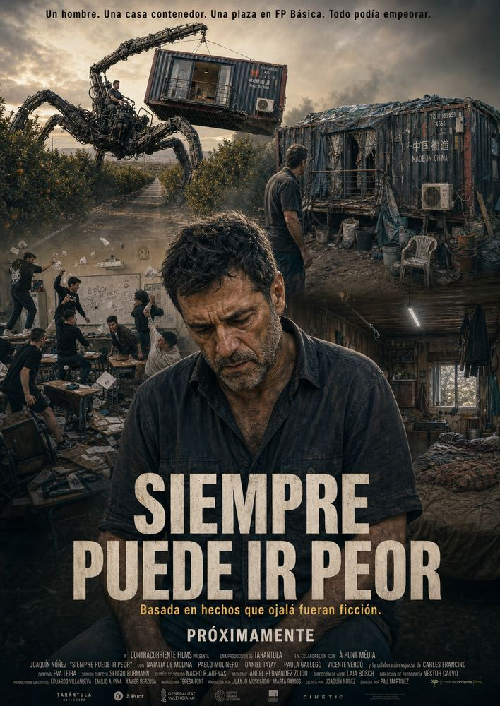
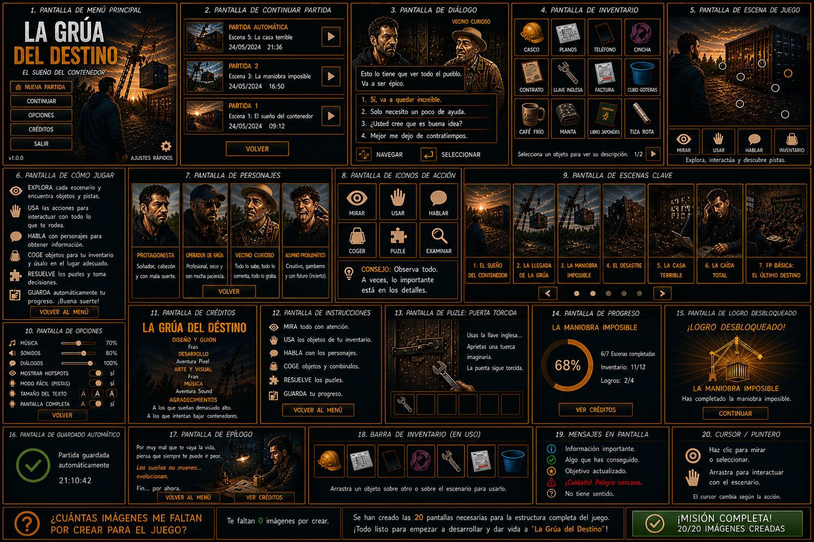

Autojuego narrativo · versión ligera
LA GRÚA DEL DESTINO
AUTOAVENTURA
Pulsa Siguiente paso y mira cómo una casa contenedor, una grúa imposible y la FP Básica convierten el optimismo en material didáctico.
Versión sin Phaser, sin CDN y con imágenes comprimidas para cargar bien en GitHub Pages.

Final de la Autoaventura
FIN
“Por muy mal que te vaya la vida, piensa que siempre te puede ir peor”.
La ilusión, la grúa, la casa contenedor, las facturas y el aula de FP Básica quedan archivadas como advertencia visual.